Dimension Reduction
Dimension reduction
For unsupervised learning, data representation and simplification is an important task. A natural objective is to represent the data on a graph: simplify \(p\) features to 2 dimensions and plot on \(x\)- and \(y\)-axes.
Example: iris data has \(4\) features (species not used). The data cannot be represented on a single graph.
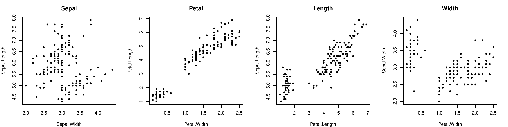
Observation: Petal.Length and Petal.Width are highly correlated: if we know one, we can predict the other one.
To simplify the representation, we do not need these two features: replace them by their average Petal.WL = (Petal.W+Petal.L)/2:
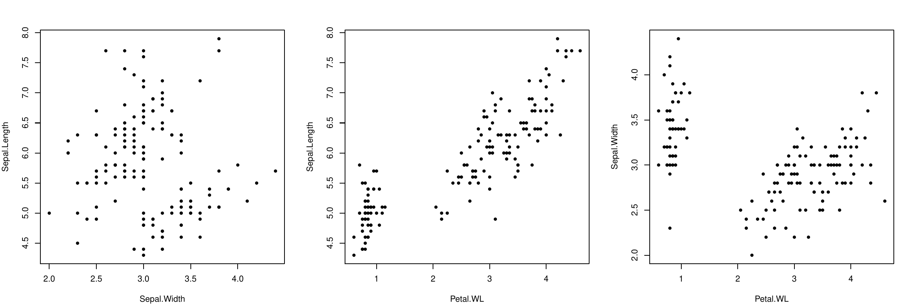
Same observation for Petal.WL and Sepal.Length...
In summary, two correlated features can be replaced by one combination without keeping the information.
The resulting representation shows as much variance as possible: theinformation is kept.
This is the principle of Principal Component Analysis (PCA).
Principal Components Analysis
PCA
The PCA is a method that looks for dimensions that are linear combinations of the \(p\) features: \[a_1 x_1 + a_2 x_2 + \cdots + a_p x_p.\] These linear combinations are called the principal components. There are \(p\) principal components.
To find the first component (i.e. coefficients \(a\)), one should maximize the variance along it. That is, \(a\) should be the solution to \[\begin{aligned} \max_a &&Var (a_1 x_{1} + \cdots + a_p x_{p})\\ s.t.&& \sum_j a_j^2 = 1\end{aligned}\] where the variance is computed on the data set. The constraint on \(a\) is here because \(a\) is only indicating a direction and should therefore be scaled to 1. As an example, let’s look at a toy case where we only have 2 features \(x_1\) and \(x_2\) showed below. We want to represent the data in one dimension, that is, along a line (dimension reduction). The dashed line shows more variability of the data and is a better principal component than the solid line.
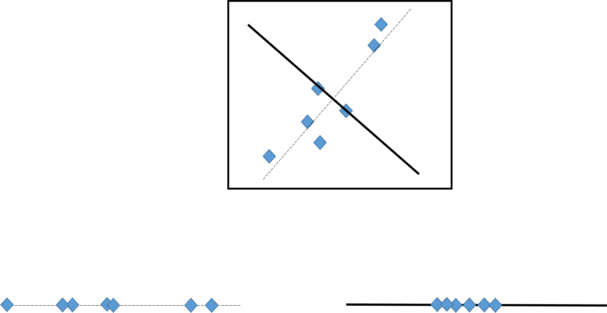
PCA: the first component
When extended to \(p\geq 2\) features, the principle remains the same. For a choice of \(a\) with \(\sum a_j^2=1\),
\(z_i = a_1 x_{i1} + \cdots + a_p x_{ip}\) are computed on the data set (\(i=1,\ldots,n\)),
the variance of the \(z_i\) is computed.
Then this variance is maximized by changing \(a\). The maximum value gives \(a^{(1)}\), the first principle component.
PCA: the second component, and third, etc.
The second component \(a^{(2)}\) is obtained with the same principle and the extra constraint to be orthogonal to the first one: \[\sum_{j=1}^p a^{(1)}_j a^{(2)}_j = 0.\] The procedure is repeated until \(p\) principal components are found (each one is orthogonal to all the previous ones).
Note: the result can be easily obtained by computing the spectral decomposition of the variance matrix of the data.
PCA: scaling
Before computing the PCA, the data can be standardized. Like any standardization, this is a choice of the user, which depends strongly on the application and on the scale (units) of the data. When the data are first standardized, the spectral decomposition is made on the correlation matrix of the data.
PCA: projection
For each PC \(j\), we have the corresponding projections of the data \(x_i\) \[z_i^{(j)} = a^{(j)}_1 x_{i1} + \cdots + a^{(j)}_p x_{ip}.\] We thus have a new data set \(z\) whose column are the projection of the features \(x\) on the PCA’s. These new features \(z_1, \ldots, z_p\) can be used
for data representation (dimension reduction),
to describe the dependence between the features (factor analysis).
PCA: variance proportion
By construction, the first principal component \(z_1\) has larger variance than \(z_2\) and so on. Also, by construction, the total of the variance is preserved: \[\sum_{j=1}^p var(x_j) = \sum_{j=1}^p var(z_j).\] The proportion of the total variance explained by the PC \(z_j\) is thus \[var(z_j)/\sum_{j'=1}^p var(z_{j'}).\] It represents how well the data are represented on the component \(z_j\).
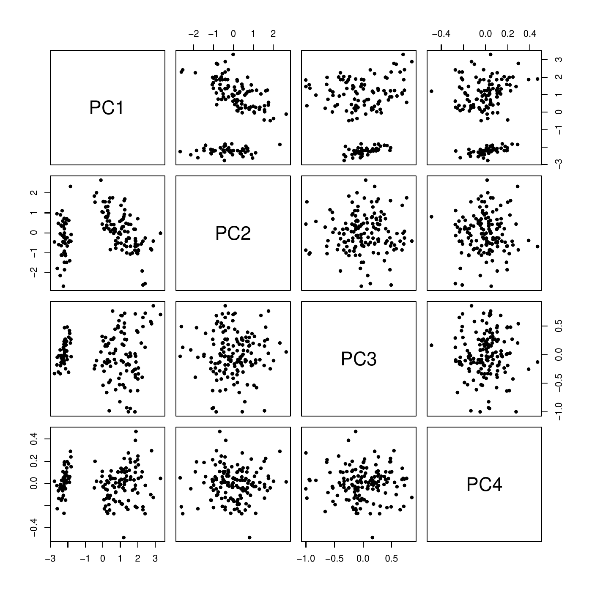
PCA: example
> iris.pca <- PCA(iris[,-5], graph=FALSE)
> summary(iris.pca)
Call:
PCA(X = iris[, -5], graph = FALSE)
Eigenvalues
Dim.1 Dim.2 Dim.3 Dim.4
Variance 2.918 0.914 0.147 0.021
% of var. 72.962 22.851 3.669 0.518
Cumulative % of var. 72.962 95.813 99.482 100.000Together, PC1 and PC2 explain \(95.8\%\) of the variation of the data. The scatter plot matrix shows that it is a good representation of the data with only two dimensions (PC\(_1\), PC\(_2\)).
The correlation between the PC and the features \(x\) can be computed to see how is PC is correlated to each features.

PCA: the circle of correlations
We see that
PC\(_1\) is positively and strongly correlated with petal length, petal width, and sepal length. This component summarizes these 3 features: the larger PC\(_1\), the larger these 3 features.
PC\(_2\) is (negatively) correlated with sepal width. The larger PC\(_2\) the smaller this feature.
PC\(_1\) explains \(73\%\) of the total data variation. PC\(_2\) explains \(23\%\) of it.
With one graph, we know
which features are correlated/independent
how to summarize the data into two dimensions.
PCA: the \(cos^2\)
The circle of correlations relates the dimensions and the features. Another view is the \(cos^2\) graph. It is interpreted as the quality of the representation of the feature by the dimension. Of course this is intimately related to the correlations.
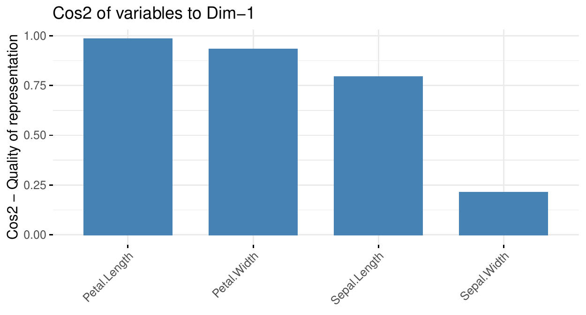
The biplot shows a map of the individuals in the dimensions and adds the circle of correlations.
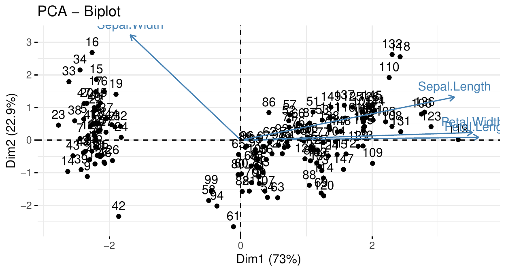
PCA: the biplot
For example, we can conclude that
instance 61 has a sepal width smaller than the average (large PC\(_2\)) and an average PC\(_1\) (which indicates an average petal length, width and sepal length).
instance 119 has an average sepal width but a large PC\(_1\), i.e. petal length and width and sepal length.
Two clusters can be observed and are well separated by PC\(_1\) (in fact these clusters correspond to species here).
PCA: number of components
Here, two components explain more than \(95\%\) of the data variability. Sometimes, more components are needed. One way to set the number of components is to target the proportion of explained variance: often between \(75\%\) and \(95\%\).
If the features are independent, this number is likely to be large. If the features are correlated, this number will be smaller. The screeplot may help.
PCA: the screeplot
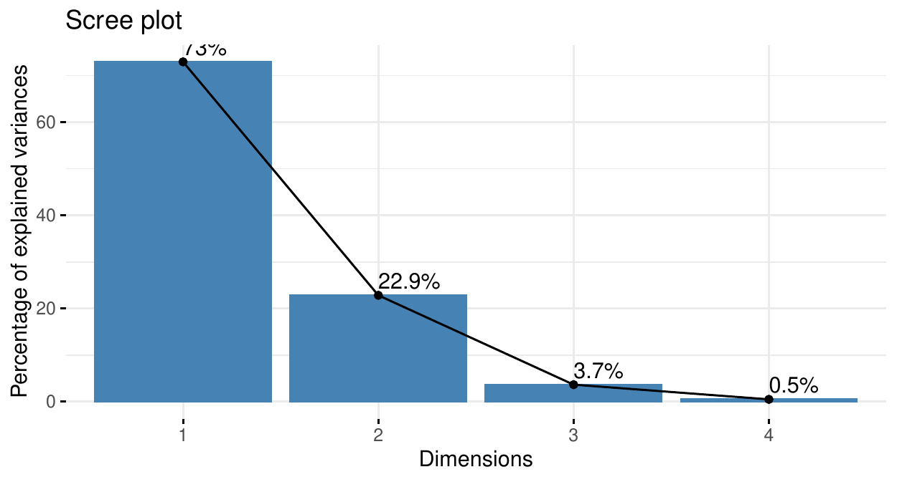
PCA and machine learning
In the context of machine learning, PCA is often used
To inspect the data, find/explain clusters, find dependence between the features. PCA can be used for EDA.
To diminish the number of features when there are too many: dimension reduction \(=>\) only keep few first PC.
Categorical data
PCA can only be performed on numerical features. When categorical features are also included in the analysis,
for ordinal data, quick and dirty solution: modalities can be mapped to numbers (\(1,2,\ldots\)) respecting their order,
for nominal data: there is no correct solution; especially replacing by numbers is incorrect.
With only categorical data, (Multiple) Correspondence Analysis is a solution. And for mixed data type (categorical and numerical), Factor Analysis of Mixed Data (FAMD) is a solution. However, they are not adapted to large data set.
Auto-encoders
Principle
PCA is a "linear" technique, based on the explanation of the correlation between the features. Auto-encoder are neural network. The idea is to train a model that recovers an instance with an intermediate layer of lower dimension than the number of features.
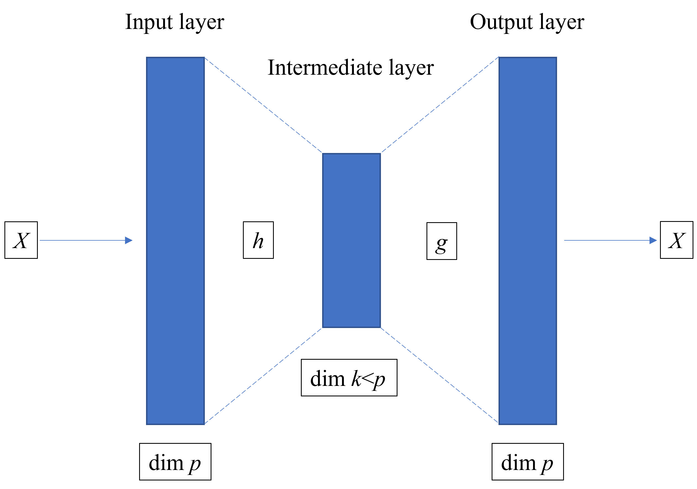
encoder + decoder = autoencoder
The input and the output (response) are the same instance (\(X\)), of dimension \(p\).
The intermediate layer (at least one) is of dimension \(k<p\).
The model is trained to recover \(X\) ate the end.
If, after traning, the model can recover \(X\) from \(X\), then it can recover \(X\) from its image in the intermediate layer \(h(X)\). Thus, only \(p\) dimensions would be needed to recover \(X\).
Thus,
the left part of the NN encodes \(X\) in its lower-dimension version \(h(X)\)
the right part of the NN decodes \(h(X)\) in an output \(g(h(X))\), hopefully close to the original image \(X\).
The better this final image the better the encoding/decoding: \[g(h(X)) \stackrel{?}{\approx} X.\]
Autoencoder vs PCA
In ML, often autoencoder are used to
Reduce the noise in the data (smoothing)
Reduce the memory needed (compressing)
Represent the data (dimension reduction)
Unlike PCA, autoencoder do not provide interpretation of the dimensions, which dimension is the most important, etc. On the other hand, autoencoders can produce better final representation of the data: the recovery of \(X\) with \(k\) components is better than with PCA. Like PCA make two-dimensional plots to discover pattern. Below is autoencoder with 3-node intermediate-layer:
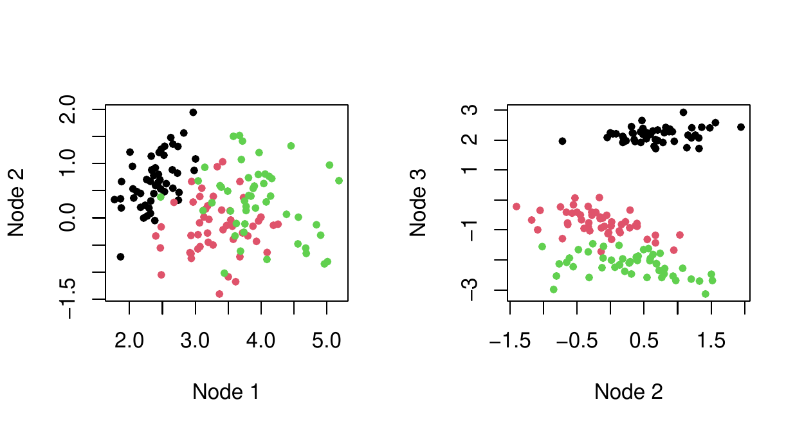
Interpretability
Relate each component of \(h(X)\) to each component of \(X\) using variable importance (or another technique). Below, Node 1 to 3 (left to right).
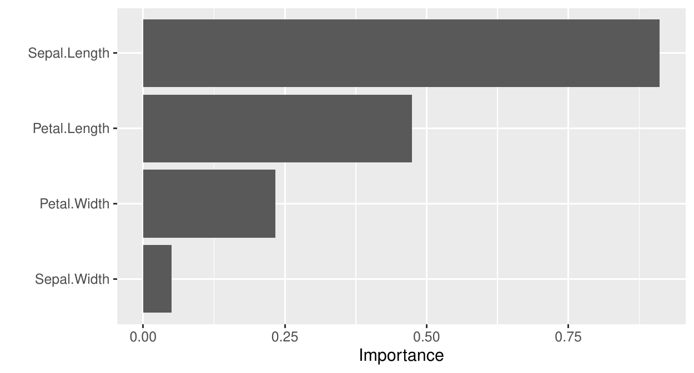
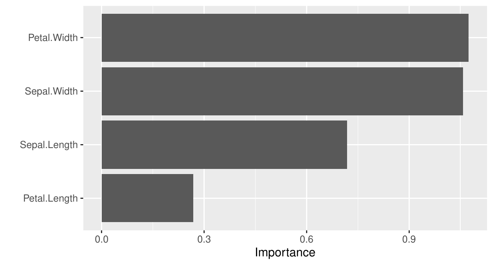
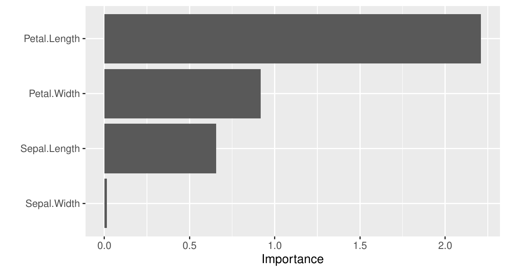